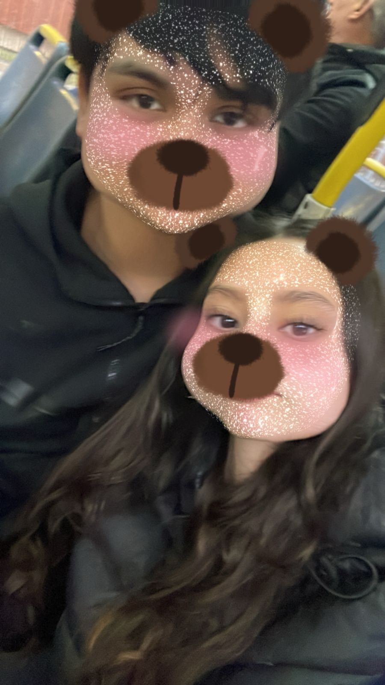
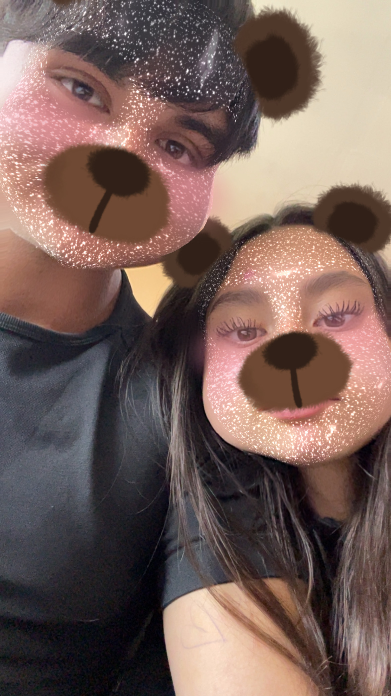

Nuestra historia
Nos conocimos en el colegio y empezamos
a hablar cuando te sentaste atras mio y leseabamos
y tu me molestabas poniendo papeles en mi gorro
y un dia me mandaste un video por ig y hablamos despues nos fuimos juntos en la micro
y recuerdo todavia cuando me dijiste k te giñaron el ojo un niño y
yo apesar de no ser nada me puse celoso pero lo oculte porque ya habia
empezado a sentir cosas por ti y que me encantaba irme contigo y pasar tiempo contigo
aunque no te abrazara por miedo a como actuaria hasta que un viernes me dijo el lucas que te parecia lindo pero aun asi no te queria decir por miedo a que no quisieras nada y no hablariamos mas.
Pero me dijo que si te gustaria pero que querias que nos jueramos conociendo y te pregunte que si te molestaria si te abrazo y dijo que no, asi que le dije que bueno pero que me daba verguenza y me dijo que igual le daba y le dije que no importaba si me daba verguenza o no que igual lo haria.
Al dia despues como iria donde el jeison te compre dos gomitas grande y el lunes te las di aunque me daba mucha verguenza y me dijo gracias, despues afuera en el recreo te abraze y senti su cintura y su olor y lo senti como un abrazo muy calido pero cuando te vi llorar suponi que seria por su ex aun asi queria puro abrazarla pero entendi que seria mejor que estuviera con sus amigas aun asi te pregunte despues como se sentia y a ay me dijo y pues te abraze, a la salida nos fuimos juntos y nos sentamos casi de los penultimos asientos y recuerdo k en una te tape los ojos y te di un besito y despues estaba nervioso y usted solo se reia, cuando ya llegamos al lider te abraze y te bese y ya despues era lo mismo nos hibamos del colegio juntos, ya despues del miercoles te hiba a dejar a la esquina de su casa
Obvio habian momentos bueno y malos y cuando su abuelo estaba mal y me contaba no sabia que decirle pero siempre le ponia atencion y solo queria abrazarte y demostrar que estaria en las buenas y en las malas aunque siempre trataba de entenderla porque igual hay veces que uno prefiere estar solo pero no sentirse solo
 
La verdad nunca e sido de tomarme fotos porque no me gustan por eso no soy de decir tomemonos fotos pero cada que me dice acepto porque con usted eso cambia completamente y me termina gustando hacerlo ya que me gusta tener recuerdo con usted y eso pasa a ser un recuerdo de ese dia.
Aunque ninguno sea perfecto yo siempre tratare de ser mejor para ti,porque quiero k seas tu mi futura esposa porque aunque seamos jovenes yo si creo que si dos personas se aman puedan estar juntos y estar el uno para el otro haci que aunque seamos jovenes no es un enpredimiento para estar con una sola mujer desde chicos porque yo quiero que tu seas mi mujer por el resto de vida que me quede y que sea la futura madre de nuestros hijos y tener la suerte de decir "un dia mas feliz gracias a la persona que amo"
La verdad yo no pensaba volver a sentir tanto por alguien pero pues todo lo que hizo por mi dio resultado y termine creando algo por ti y me alegro ya que sin importar si estoy mal haces que con unas simples palabras me haces muy feliz y aunque aveces llore por usted eso no es ni una gota de todos los sentimientos que me das como:amor,felicidad,amado,querido,etendido y sobretodo apoyado sin importar que sea me apoyas y crees en mi y eso yo lo adoro mucho ya que aveces ni de mis familiares tengo ese apoyo